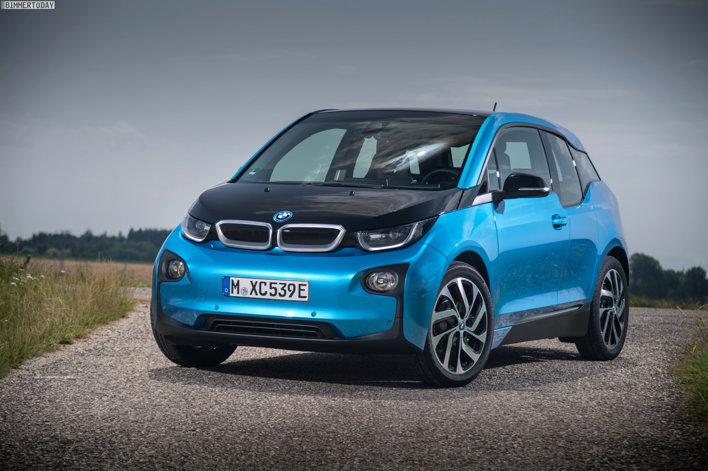
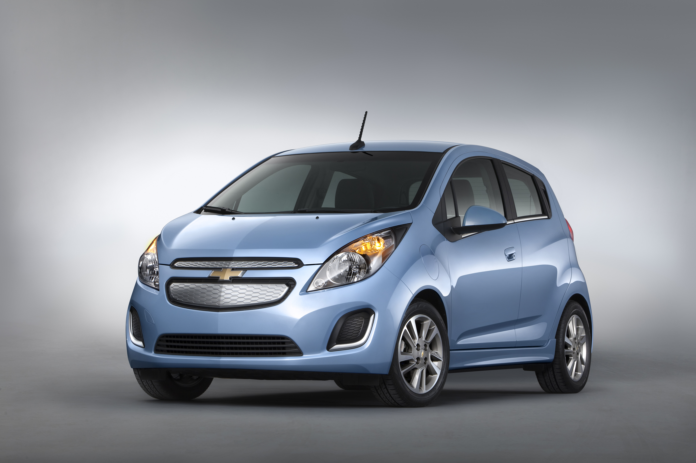
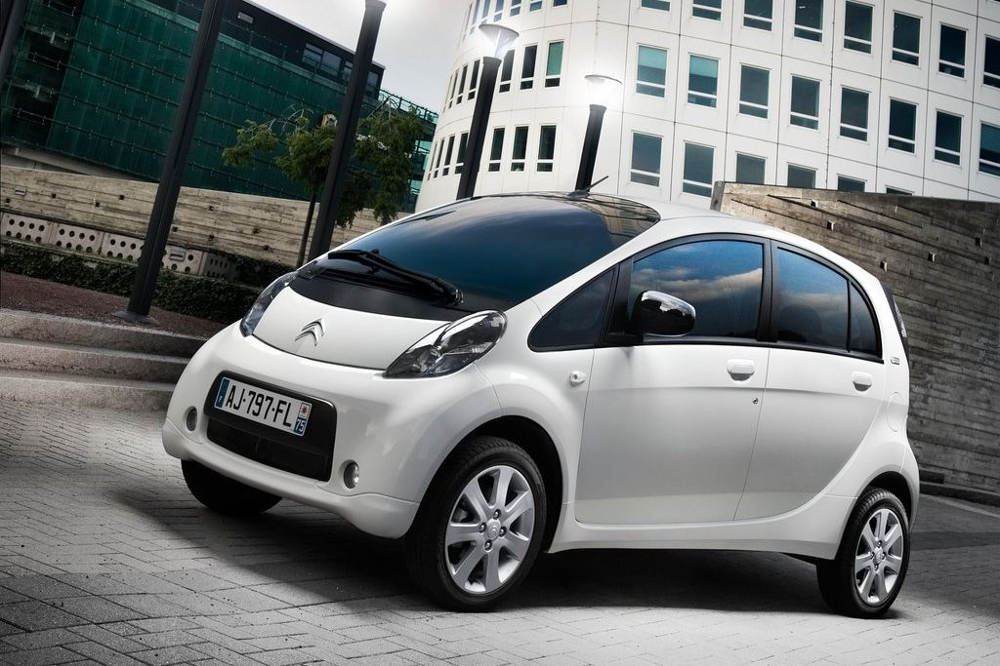
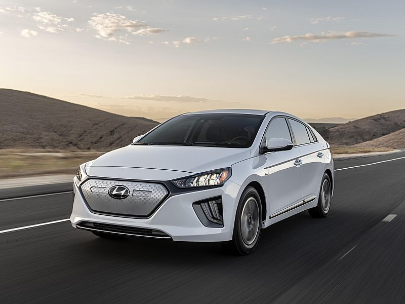
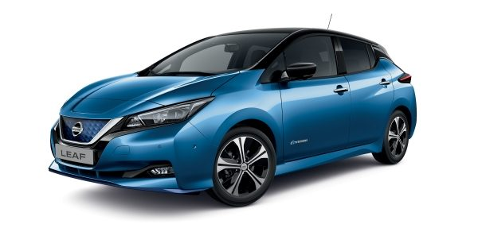
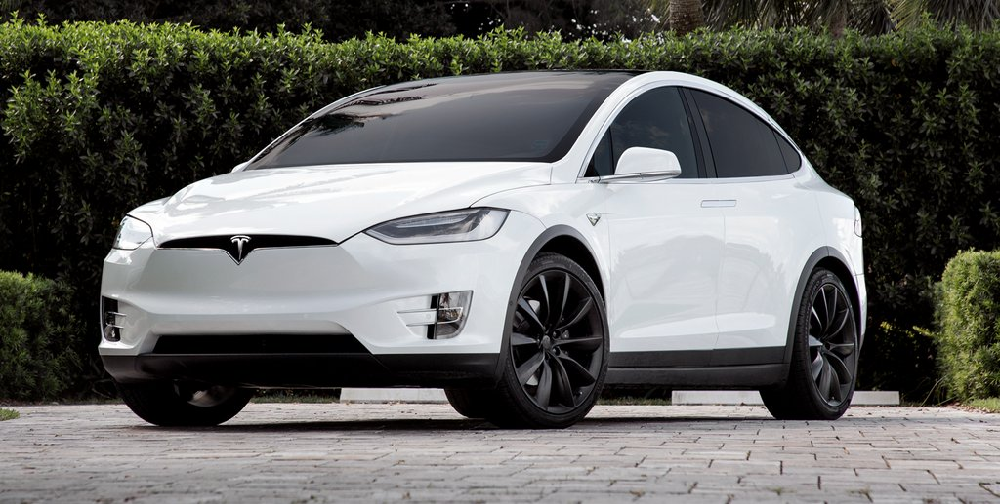

|  |
BMW i3The BMW i3 is a B-segment, high-roof hatchback manufactured and marketed by BMW with an electric powertrain using rear wheel drive via a single-speed transmission and an underfloor Li-ion battery pack and an optional range-extending petrol engine. The i3 was BMW's first mass-produced zero emissions vehicle and was launched as part of BMW's electric vehicle BMW i sub-brand. |
|  |
Chevrolet SparkevThe Chevrolet Sparkev(originally marketed prominently as the Daewoo Matiz) is a subcompact hatchback city car produced by General Motors's subsidiary GM Korea. The first generation of Daewoo Matiz was launched in 1998, replacing the Daewoo Tico. In 2002, Daewoo Motors became General Motors' South Korean division, known as GM Korea. Since the transition, the vehicle has increasingly been marketed under the Chevrolet badge. The second generation model was introduced by GM Korea in 2005, with the third generation launched in 2010. |
|  |
Citroën C-ZEROThe Citroën C-ZERO is a supermini/city car produced by Citroën and is 100% electric powered. It was developed in collaboration with Mitsubishi Motors Corporation (MMC). Its sister will be marketed by Peugeot as the Peugeot iOn. The differences between the cars will be different exterior and interior styling and a price difference. |
|  |
Hyundai IoniqThe Hyundai Ioniq is a compact five door liftback manufactured and marketed by Hyundai. The nameplate Ioniq is a portmanteau of ion and unique. It is the first automobile to be offered in hybrid, plug-in hybrid, and all-electric variants with no "standard" internal combustion engine only version. The Ioniq Hybrid debuted in South Korea in January 2016, with all three variants debuting at 2016 Geneva and New York auto shows. The hybrid variant launched in its home market in February 2016, followed by the electric model in July 2016. The plug-in hybrid version followed in February 2017. |
|  |
Nissan LeafThe Nissan Leaf (Japanese: 日産・リーフ, Nissan Rīfu), stylised as LEAF, is a compact five-door hatchback battery electric vehicle (BEV) manufactured by Nissan. It was introduced in Japan and the United States in December 2010, and it is currently in its second generation, introduced in Japan in October 2017. During its product life cycle, the Leaf's range on a full charge gradually has been increased from 117 km (73 miles) to 364 km (226 miles) (EPA rated), thanks to several minor improvements but mainly to the use of a larger battery pack |
|  |
Tesla Model XThe Tesla Model X is a mid-size all-electric luxury crossover made by Tesla, Inc. The vehicle is notable in that it uses falcon-wing doors for passenger access. The Model X was developed from the full-sized sedan platform of the Tesla Model S. The Model X has an EPA size class as an SUV, and shares ~30% of its content with the Model S, half of the originally planned ~60%, and weighs about 10 percent more. Both the Model X and Model S are being produced at the Tesla Factory in Fremont, California. The prototype was unveiled at Tesla's design studios in Hawthorne, California on February 9, 2012. First deliveries of the Model X began in September 2015. After one full year on the market, in 2016, the Model X ranked seventh among the world's best-selling plug-in cars. |